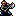

Character Overview
Orsin is a member of the FreeBlades and joins your team at the very beginning of the game. He is the typical hot-headed axe fighter
that is usually paired with another, calmer axe fighter. Orsin is one of the best units of the game because of his combat potential,
namely his ability to crit left and right.
Although Orsin's base stats and growths are very mediocre, they don't take away from other aspects of his kit that make him more
deadly than 90% of Thracia 776's roster.
Orsin makes full use of his personal weapon, Wrath skill, and PCC of 3 to become a crit machine starting from the beginning of the game
all the way to the end. These three parts of his kit are responsible for Orsin's insane combat potential, and thanks to the Crusader
scrolls, Orsin won't fall too behind on stats, since they are a bit weak.
Overall, Orsin is, without a doubt, the better axe fighter. He frequently crits and destroys most enemies at any point in the game, making
him one of the most valuable combat units you could ask for.
Base Stats and Growths
| Level 1 Axefighter  | HP | STR | MAG | SKL | SPD | LCK | DEF | CON | MOV |
|---|---|---|---|---|---|---|---|---|---|
| Base Stats | 27 | 6 | 0 | 7 | 9 | 3 | 4 | 11 | 6 |
| Growth Rates | 85% | 30% | 5% | 25% | 35% | 55% | 25% | 25% | 2% |
Orsin's base stats are pretty good for the beginning of the game. He can double a lot of the early-game units and strong enough to one-round many of the weak Imperial soldiers/archers with an Iron Axe, thanks to his base 6 STR and 9 SPD. His 27 HP and 4 DEF lets him tank a couple of hits too. A high CON of 11 also means that he'll be able to capture a lot of the Imperial troops you'll see in the earlier chapters, and even some pirates that you'll encounter in Chapter 2 and 2x.
The growth rates a bit of a pain to look at, however. The only noticeably high growth rate Orsin has is HP, which a whopping 85%. Other than that, most of Orsin's growth rates range from 20-35%, with the execption of his 55% LCK growth rate, which honestly doesn't matter too much. These shaky growth rates mean that Orsin's growth will be compromised, and you'll likely get a lot of bad level-ups if you don't place a scroll on him to help him out. More on that later.
Other Stats
| Weapon Ranks | Skills | PCC | Leadership Stars | Movement Stars | Promotion Gains |
|---|---|---|---|---|---|
 Wrath Wrath |
3 | 0 | 0 | STR + 2 / MAG + 1 / SKL/SPD/DEF + 3 / Sword Rank D |
Although Orsin's growth rates are troubling, his Hero promotion really helps in alleviating the stress of increasing his important growths. A +2 in STR means Orsin will hit harder, and more importantly, crit harder, and a +3 to SKL/SPD/DEF are all great, as those are all vital stats. A Sword Rank of D could give Orsin an edge in some situations if you want to use the weapon triangle advantage, but in most cases it's more helpful to train Orsin in just Axes so that he can increase his weapon level. Remember that his weapon level starts at E!
Orsin's Wrath skill and PCC of 3 is what makes his combat potential. His Wrath skill guarantees that the first hit of any enemy phase combat (when the enemy attacks first) will be a critical. Along with a PCC of 3, many of his consecutive attacks will have a really good chance of being a crit. This is made even more bonkers if Orsin is using his PRF, the Bhuj axe. More on that later.
Since Orsin joins at the beginning of the game, you have plenty of time to train him and make sure that his stats don't fall flat. You won't have to worry about Orsin falling behind either, as his Wrath skill makes his enemy phase combat insane, and his 3 PCC ensures that he'll crit very frequently as long as he's using an axe with a decent amount of crit. Orsin is a good unit with this alone, but I have yet to talk about his personal weapon...
PRF's and Support Bonuses
| Name | Range | Uses | Weight | Might | Hit | Crit | Effects |
|---|---|---|---|---|---|---|---|
| Bhuj | 1-2 | 60 | 9 | 10 | 80% | 30% | None |
Orsin's Bhuj axe is basically a Killer Hand Axe. What I mean is that it has two range, is very accurate, and has a flat 30% crit chance. The reason this PRF is so good is because it compliments Orsin's entire kit. The 80% accuracy is great because most of the enemy units in Thracia have terrible avoid due to low SPD, and the flat 30% crit that the Bhuj grants functions well with Orsin's 3 PCC. If Orsin attacks twice with this weapon, the second attack with be a 30% crit chance times 3, which is 90%! Orsin is almost guaranteed a crit on every second attack. His Wrath skill also guarantees an attack when he counters on enemy phase. Although the Bhuj axe may not have insane Might, its accuracy and crit chance alone make this weapon amazing. It also has a generous amount of 60 uses. You can also get a second Bhuj axe by stealing it from an enemy in the B route of this game. However, that route isn't recommended for newer players, so I suggest you conserve its uses somewhat and don't go too crazy with it.
Supports: Tanya
Supported by: Tanya, Eyvel
Character Tips
I highly recommend putting on one or two Crusader Scrolls on Orsin to help him level up his mediocre growth rates. If Orsin is having trouble leveling up his SKL/SPD, then the Odo and Ced scroll should work wonders on him. The Nál and Fjalar scrolls are also good for leveling up Orsin's STR, and provide small boost to his other offensive stats. All of these scrolls can be obtained in the early-game, up until Chapter 10. If you require a better boost to STR and/or DEF, then consider using mid-late game scrolls such as the Njörun and Dain scroll, respectively.
Please make sure to distribute your scrolls equally, as many of your other units will require boosts to their stat growths as well. Try to keep Orsin's stats balanced, and work on a specific one if you notice it's falling behind. Other than that, make use of this crit machine and have some fun with Orsin.